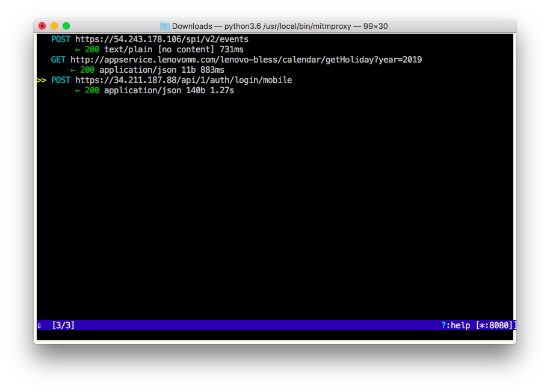
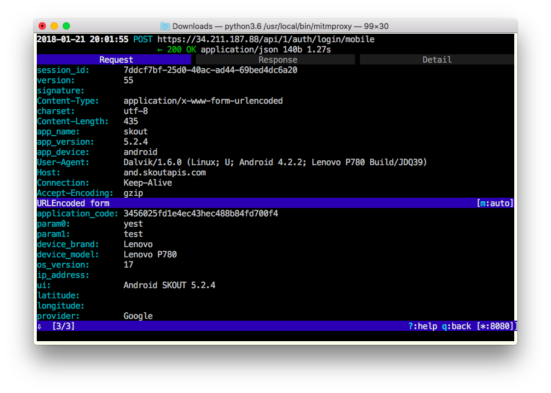
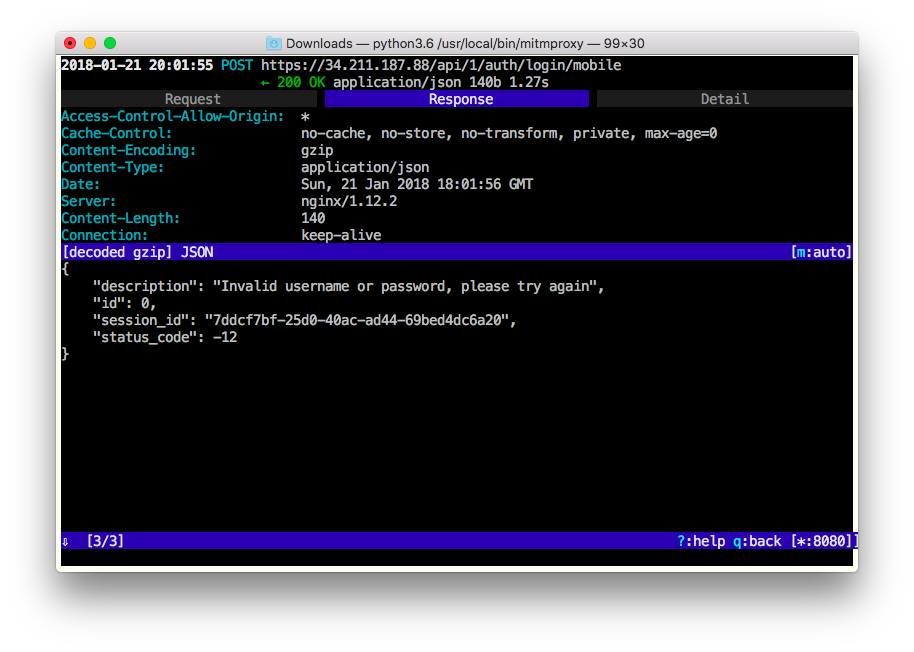

Suppose you have a third-party Android app and want to disable SSL pinning in the app. Just
Yes, it’s that simple ;) I’d recommend you to start with XPosed framework and JustTrustMe. Here is a quick and not very detailed instruction for your Android device:
Also install mitmproxy on your Mac. Then
Run in Mac console
$ ifconfig | grep "inet "
The output will be similar to
inet 127.0.0.1 netmask 0xff000000
inet 192.168.0.113 netmask 0xffffff00 broadcast 192.168.0.255
Find the IP of your Mac (in the example above, the IP is 192.168.0.113).
Set the IP and 8080 as HTTP proxy address:port for your Android device. If your ROM supports a system-wide proxy, set the IP and 8080 in system settings, otherwise start ProxyDroid and set it in the app.
Run mitmproxy on your Mac.
Enjoy catching HTTPs traffic…
  
Or not. JustTrustMe, as well as any other SSL disabling tool, works for some apps, and does not work for other. You don’t know if it works for your until you try it. If you don’t see the HTTPs traffic you need, try another tool or consider reversing the app yourself/hiring somebody who can help you with it.
Commenting is not available in this blog, but you can write me a letter or message. Please, note that English is not my native language. I'm sorry for mistakes/missprints, if any.
Prev: Debugging third-party Android Java code on OS X